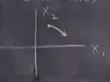
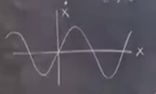
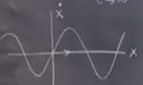
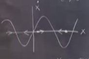
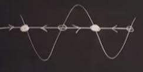
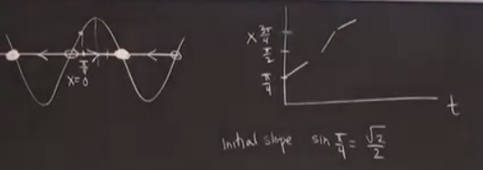
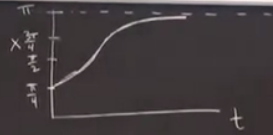
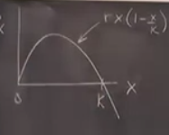
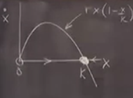
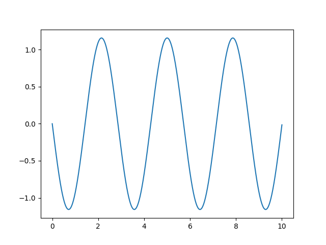

Ders 1
Bu ders için önkoşul bilgi: en önemlisi Calculus. Bir başkası bir eğriyi taslaksal olarak çizmek, zihinde hayal edebilmek. Derste bir belli parametreleri olan bir fonksiyondan bahsettiğim zaman bu fonksiyonları bilgisayara ihtiyaç duymadan taslak olarak çizebilmek önemli. Bu çizimi belli aileye ait eğriler için bir parametreye göre / değişirken yapabilmek iyi olur, Calculus'un o tarafıyla kendimizi rahat hissetmemiz lazım. Lineer Cebir'den özdeğerler ve özvektörler gerekli. Biraz İleri Calculus iyi olur, mesela bir Jacobian'ın ne olduğu. Kısmi türev nasıl alınır bu kesin lazım... Biraz çok değişkenli Taylor Serileri bilgisi, ama çok değil. Derste bir noktada Fourier analizi kullanacağız, ama bu konuyu bildiğiniz farzedilmeyecek, derste o konuyu da anlatacağız.
Genel bilim bilgisi faydalı olur tabii, mesela Kimya, Biyoloji gibi konular, genel mühendislik te öyle, ama bu bilgi de şart değil; Gereken bilim bilgisini o bilim dalına dokunduğumuz zaman o anda göstereceğim.
Dersimizin sene olarak seviyesi 1. sene üstlisans diyebilirim. Bazen lisans öğrencileri dersi almak istiyorlar, onlara evet diyorum, bu mümkün. Fakat bu ders biraz aldatıcı, gözyanıltıcı olabilir. Dışarıdan ilk bakışta basitmiş gibi gözüküyor, fakat içinde bazı incelikler, kavisler var, bunlar insanı zorlayabilir. Zorluk şurada aslında, bu ders sizi değişik bir stilde düşünmeye zorlayacak. İçinde bir sürü ispatlar, hesaplar olan bir ders değil bu, zihinde canlandırma, geometrikleştirme gerekecek, ve sezgi (intuition) çok önemli.
Bilgisayarı bol bol kullanın; bir diferansiyel denklemi Matlab [Python!] ile çözmeyi rahatça yapabilmek iyi olur, paketler üzerinden, kendi kodunuzu yazarak, nasıl yapacağınız size kalmış, sadece şunu bilelim, gayrı lineer sistemleri çözmek için bazen bilgisayar hesabı gerekli.
Artık derse başlayabiliriz.
Önce biraz tarih: konumuz nasıl başladı? Nasıl gelişti? Ana gelişme noktaları şunlar,
1666: Newton
Basit Diferansiyel Denklemler (Ordinary Differential Equations -ODE-). Isaac Newton bu noktada 23 yaşında, bu onun için büyük bir sene, Calculus'u o yıl icat etti, optik konusunun kurallarını keşfetti, evrensel yerçekim gücünü keşfetti, başka işler de yaptı.. bu sene onun için iyi geçti yani. Newton ODE'leri tamamen keşfetti denemez tabii, ama o ana kadar ODE alanında en ileri giden o'ydu. Hangi tür hesaplar için? Kepler gezegenlerin eliptik şekilde hareketini teorize etmişti, Newton bunları Calculus kullanarak modelleyebildi. Dinamik (dynamics) alanının başlangıcı burası. Daha ilginci Newton bizim bugün 2-cisim problemi (2-body problem) dediğimiz problemi çözdü, yani güneş ile dünyanın etkileşimi nasıldır, vs. ve eliptik yörünge zaten bu çözümden ortaya çıktı. Fakat Newton 3-cisim problemini denediğinde, yani dünya, güneş, ay üçlüsü için, bu problemi çözemediğini farketti. Newton etrafındaki tanıdıklarına "hiçbir problem bende tıbbi başağrısı yaratmamıştı" demiş, 3-cisim problemi onu hakikaten zorlamış olmalı. Bu problemi diğer bilimciler de çözmeye uğraştı.
1800 Sonları:
Bu noktaya ileri sarıyoruz; ve hala kimse 3-cisim problemini çözemedi. Okkalı bilim adamlarından kim varsa denedi: Euler, Gauss, vs. Ve nihayet matematikçi Poincare meselenin ne olduğunu keşfetti - problemin analitik (closed form solution) çözümü mümkün değildi. Poincare Calculus'a ek olarak geometri kullanarak bizim bugün kaos dediğimiz matematiksel olguyu görmüştür. Kaos'u ilk gözlemleyen, belirten o'dur. Bu geometrik yaklaşımda faz alanı (phase space) dediğimiz bir kavram var, bunu ileride göreceğiz.
Not - Tabii kaos deyince kaos'u tanımlamak lazım.
Kaos deterministik sistemlerde ortaya çıkar. Bu ilginç gelebilir, çünkü kaos kelimesini çoğunlukla kargaşa, karmaşa ile özdeşleştiririz, ve bu rasgelelik kavramlarını çağrıştırır. Fakat tamamen deterministik olarak, yani hiç rasgelelik (stochastics) içermeyecek şekilde matematiksel kaos ortaya çıkabilir. Bu tür deterministik sistemlerde dönemsiz (aperiodic), yani kendini tekrar etmeyen, ve bir noktada durmayıp devam edebilen durumlar oluyor, ve bu durum dış dünyaya "tahmin edilemez" şekilde yansıyor.
Bir diğer özellik kaotik sistemlerin "başlangıç anına olan hassas bağlantısı"dır, bu özelliğe sahip sistemler başlangıç noktasından bir süre sonra bir konuma geldiler diyelim, eğer başlangıç şartlarını azıcık bile değiştirsek (simülasyonu başa sardık mesela) ve sistemi tekrar işletsek bu tür sistemler aynı süre ardından tamamen başka bir konumda olabiliyorlar. Bu iki simülasyon başlangıç ardından az bir süre aşağı yukarı aynı gidebiliyorlar, fakat bir süre sonra, üstel bir hızda, birbirlerinden farklılaşıyorlar. "Hassas bağlantı" ile söylemek istediğimiz bu, başlangıçtaki ufak farklılıklar aşırı bir hızda alternatiften ayrışıyorlar, bu da öngörülemezliğin ana sebeplerinden biri. Rasgelelik değil bu, tekrar belirtelim, yakın vade tahminler hala mümkün olabiliyor.
Poincare bunları 3-cisim probleminde görebiliyordu. Bu noktada Poincare'nin konu hakkındaki yayınladıklarının Kaos'ta bir patlama yaratacağını düşünüyor olabiliriz, bunlar olmadı çünkü kimse Poincare'nin yaptıklarını anlamadı. Bana göre sebeplerden biri Poincare'nin resim çizme yeteneğinin çok kötü olması; deha bir matematikçiydi, hatta görsel / geometrik olarak düşünebiliyordu, fakat iş çizmeye gelince bunu yapamıyordu, ki kaosu öğretmek için bu biraz gerekli.
Kaos'un bir türlü patlama yapamamasındaki bir diğer sebep zamanlama: Poincare zamanında, 1800'lu yılların sonu 1900'lerin başında, klasik mekanik alanı hareketin ve bereketin olduğu yerler değil. Aksiyon diğer matematik alanlarında, hatırlarsak 1900'lu yıllar başında kuantum mekaniği başlıyor, izafiyet kuramı üzerinde çalışılıyor.. ve artık kimse 3-cisim problemine bakmak istemiyor. 200 senedir bakılmış bu probleme, ve herkes bıkmış, başka şeyler yapılmak isteniyor.
1920 - 1950s: Gayrı-Lineer Titreşirler (Non-linear Oscillators).
Bu dönemde mühendislik ve fizikte mesela radyonun keşfi var, ki radyolar vakum tüpü teknolojisiyle işlerler (tüpler bugünkü transistörlerin babası sayılır), ve radyoda kullanılan tüplerde gayrı lineer bir titreşir kullanılmıştır. Radar, lazer hep gayrı lineer dinamiğe bağlı olarak çalışan şeyler. Bu dönemde gayrı lineerlik hakkında bir kitap okumak isteseniz sadece titreşirler konusunu görürdünüz, çünkü kaos dediğimiz gibi artık unutulmuş durumdaydı.
1950: Bilgisayar keşfedildi.
Bu keşifte 2. Dünya Savaşı'nın etkisi oldu, ardından Soğuk Savaş. Bilgisayar gayrı lineer sistemler alanında faydalı bir araç oldu, görsel olarak grafiklemek olsun, çözümde, simülasyonda olsun, pek çok fayda getirdi.
1960'lı Yıllar:
MIT'den meteorolog ve matematikçi Lorenz, ki kendisi dersimizin kahramanlarından biri, bu bilgisayarlar sayesinde bazı buluşlar yaptı. Lorenz'in en önemli buluşlarından biri taşınım (convection) sistem modelinde kaos bulması. Lorenz'in asıl ilgilendiği hava tahminiydi, o konuyu araştırırken sıvı dinamiğinden esinlenen havadaki taşınım kurallarını modelleyen bir yaklaşımı inceliyordu, ve bu modelin öngörülemez bir şekilde davrandığını gördü. Konu hakkında yazdığı makalede kaos kelimesini kullanmadı, "deterministik dönemsiz akım" kelimelerini kullandı; bu makaleyi tavsiye ederim, çok güzel yazılmış, anlaşılabilir bir makale. Bu noktada diyebilirsiniz ki, tamam kaos patlaması artık şimdi başlayacak, ama Lorenz'in bulduklarıyla da kimse ilgilenmedi. Sebep kısmen Lorenz'in yayınlarının fizikçilerin okumadığı meteoroloji dergisinde çıkması, ama diğeri Lorenz'in sıvı mekaniği'ndeki arkadaşlarının bile modele bakıp "bu ne biçim model?" diye yapılanı beğenmemeleri! Yani yapılanların, Lorenz'in buluşunun öneminin kavranamaması.
Bu sırada Smale, diğer bir köşede, KAM baş harfleriyle bilinen bir (üçlü) matematikçi grubunun yaptıkları da var, bu araştırma pür matematiksel olarak devam eden bir araştırmaydı, bugün daha matematiksel bir kaos dersi alsanız Smale ve KAM o derste sürekli işlenir. Bu kişiler Poincare'nin yolundan gittiler, o araştırmayı canlı tutmaya çalıştılar, ve onlar da çok önemli, derin işler yaptılar. Ama ana akım bilim onlarla da pek ilgilenmedi.
1975:
Nihayet kaos patlaması başlıyor. Bir sürü buluş 70'li yıllarda ardı ardına gelmeye başladı. Robert May adlı nüfus bioloğu yinelenen eşlemlerinde (iterated maps) kaos keşfetti, ki bu modellerde zaman ayrıksal ve $x_{n+1}= f(x_n)$ değişim olarak gösteriliyor, bu yaklaşım nüfus dinamiğini daha basit bir şekilde temsil etmeye yarıyor. $f()$'i mesela hesap makinesinde ardı ardına işletebileceğimiz bir hesap gibi görebiliriz, belki hesap makinesinde bunu yapmışsınızdır, sürekli kosinüs (cos) düğmesine basmak mesela [böylece kosinüs çıktısı bir sonraki kosinüs hesabı için girdi oluyor]. Bu ardı ardına işletim bir tür yinelen eşlenim olarak görülebilir. Lorenz sisteminden sonra bu dinamiğe bakacağız.
May 1960'da bir makale yazdı, başlığı "çok çetrefil dinamiği olan basit lineer sistemler", bu makale ünlü Nature dergisinde çıktı, ve artık pek çok kişi önlerinde araştırılacak koca yeni bir alan olduğunu farketmeye başladı. May diğer yandan pedagojik olarak ta önemli bir mesaj veriyordu, "öğrencilerimize habire lineer sistemler öğretiyoruz, yeni problemlerden haberleri olmalı, lineerliğe girince pek çok bilinen alt-üst oluyor" vs. May kendini duyurmayı başardı. May'in ilgi alanı lojistik denklemlerdi denebilir.
Diğer yanda Mandelbrot var, o fraktallar konusuna baktı, ki bu konunun da kaos ile çok yakından bağlantıları olduğu ortaya çıktı.
Winfree - biyolojide lineer titreşirleri inceliyordu. Winfree benim hocamdır, bu sebeple onun yaptıklarına daha yakınlık hissediyorum tabii (!), fakat Winfree matematikte, kaosta önemli ilerlemeler yaptı, mesela topolojiyi matematiksel biyolojiye getirmek gibi.
Nihayet, pür matematikçi Ruelle ve Takens - kaos alanında yapılmaya başlananların klasik mekaniğin en büyük çözülmemiş problemi türbülansı analiz etmekle yakın bağlantılarının olabileceğini düşünmeye başladılar, ve konuya o yandan yaklaştılar. Türbülans bilindiği gibi Navier Stokes denklemlerinde, gerçek akışkan sistemlerde türbülansın nasıl davrandığı. Belki türbülans kaosun farklı bir formundan ibaretti?
70'lerde bu iş iyice büyüdü. İsmini de bu sırada aldı (Jim York isimlendirdi).
1978:
Bu sürecin zirve yaptığı an herhalde Feigenbaum adlı genç bir fizikçinin lojistik eşlemi ve diğer tür yinelen eşlemlerinin arasında, ve faz geçişleri (phase transitions) arasında bağlantıyı bulması. Feigenbaum "kaosa giden evrensel yol"u keşfetti, birbirinden tamamen farklı, kimi biyolojik, kimi kimyasal sistemlerin sayısal olarak kaosa tıpatıp aynı şekilde gidebildiğini gördü. Yani düzenli konumdan kaosa evrilişin matematiksel kuralları vardı. Feigenbaum tüm bunları istatistiki fizikteki faz geçişine bağlayınca, pek çok insana bu inanılmaz geldi.
Bu nokta kaosun, ve bu dersin tepe noktalarından biri, dersin süreci içinde bunları göreceğiz. Feigenbaum'un yaptığı ana iş şudur: tekrar normalizasyon (renormalization) tekniğini kullanmaktır, ki bu buluş daha sonra tekrar normalizasyon grubu denklemleri olarak geliştirildi, bunu yapan bilimci fizikte Nobel ödülü aldı.
1980'li Yıllar:
Artık patlama noktasındayız. Kaos, fraktallar her yerde. James Gleick adlı yazar kaos hakkında Kaos adında bir kitap yazdı, müthiş satış yaptı. Steven Spielberg'in Jurassic Park filminde (erken 90'li yıllar, ama senaryo 80'li yıllarda yazılmış) karakterlerden biri kaos teorisyeni, "dinazorları şuraya koyarsanız, ne olacağı belli olmayabilir", gibi şeyler söylüyor. Yani artık popüler kültüre de girişler yapılmış.
Diğer yandan deneysel olarak kaosun teorik bulguları da sürekli doğrulanıyor.
1990'li Yıllar:
Zirveden iniş, daha doğrusu, artık kaos başka alanlara dönüşüyor, onları etkiliyor. Dönüşümlerden biri çetrefil sistemler (complex systems). Kaos 3-4 değişkenleri sistemlere bakıyordu, çetrefil sistemler "milyon, milyar sayıda değişken olsa ne olur?" gibi sorular sormaya başladı.
2000'li Yıllardan Bugüne:
Artık hareket ve bereket çetrefil sistemlerde, ve çizit teorisi'nde (network theory). Artık sırf kaoscu olan yok, ilgi başka alanlara kaydı.
Soru
Uzay Yarışı başladığında [Sovyetler ve Amerikalılar arasında] kimse Poincare'nin buluşlarını kullandı mı?
Cevap
Kaosun bulguları uzay taşıtlarının en az enerji ile ilerlemesini sağlayacak gidiş yollarını (trajectory) bulmakta faydalı oldu. Uzaydaki gezegen çekim alanlarının etkileşiminden kaotik gidiş yolları ortaya çıkıyor, ve ne yaptığınızı biliyorsanız kaosun başlangıç anına olan hassas bağlantı prensibini kullanarak bu alanlar üzerinden sörf yapabilirsiniz. Bir kere yakıtsız kalan bozuk bir uzay aracını mühendisler bu şekilde dünyaya geri getirdiler.
Soru
Mandenbrot kaosta yapılanlardan etkilendi mi?
Cevap
Onun yaptıkları paralel bir yolda gerçekleşti bence. O borsayı inceledi, bulutların şekillerine baktı, vs. Mandelbrot kümesini keşfetti, ki bu kavram yinelenen eşlenimlerle çok yakından alakalı, yani Mandelbrot kaosa pek çok yönden yakınlaştı, fakat onun ana hedefi başkaydı. Ana bağlantı kaosta incelediğimiz pek çok geometrik şeklin fraktal olması.
Tarih böyle. Şimdi işin matematiğine gelelim.
Önce tüm dönem işleyeceğimiz konuların bir resmini çizmek istiyorum. Böylece her an bu resmin neresindeyiz onu görebileceğiz. Ayrıca konuya "dinamik" kelimesiyle atıf yapacağım, çünkü zamana bağlı olarak değişen her şeyi benim gözümde dinamik alanına giriyor.
Dinamiğin Mantıki Yapısı
1) Diferansiyel denklemleri çoğunlukla böyle yazarız; $\dot{\underline{x}} = \underline{f}(\underline{x}) $. $\underline{x}$ bir vektor, $ \underline{x} \in \mathbb{R}^n$, yani $\underline{x} = (x_1,...,x_n)$. $\mathbb{R}^n$ faz uzayımız, ya da konum uzayımız, yani sistemimizin aldığı değerler hep bu"evren" içinden. $f$ bir fonksiyon ve çoğunlukla lineer bir fonksiyon. Bileşenler şöyle,
$$ \dot{x}_1 = f_1(x_1,...,x_n)$$
$$ \vdots $$
$$ \dot{x}_n = f_n(x_1,...,x_n)$$
Yani bu sistem birbiriyle bağlantılı (coupled) n tane ODE sistemi, $f$'ler incelediğimiz problem ile alakalı fonksiyonlar. "Sistem lineer" deriz eğer eşitliğin sağ tarafındaki tüm $x_i$'ların üstellik derecesi 1'den fazla değil ise, ve $x_i$'lar birbiriyle çarpılmıyor, ya da $x_i$'lerin lineer olmayan fonksiyonları kullanılmıyor ise. Gayrı lineer bir terim mesela $x_1^2$ olabilirdi, ya da $x_2x_3$, ya da $\sin(x_4)$.
Soru
Sadece otonom sistemlerle mi ilgileneceğiz? Yani eşitliğin sağ tarafında zamanın olmadığı türden sistemlerle? Üstteki sistemde görüldüğü gibi eşitliğin sağ tarafında zaman, $t$ yok, bu durumda sistem otonom oluyor.
Cevap
Evet, bu derste çoğunlukla otonom sistemlerle iş yapıyor olacağız. Bazı durumlarda, modele dışarıdan güç etkisi olduğu durumlarda mesela, zaman faktörünü denkleme eklemek doğal oluyor, fakat bu tür örneklere çoğunlukla bakmayacağız. Aslında o tür sistemleri bile otonom hale getirebilirsiniz, ek bir $\dot{t} = 1$ değişkeni eklersiniz mesela, böylece
$$ \dot{x}_1 = f_1(x_1,...,x_n)$$
$$ \vdots $$
$$ \dot{x}_n = f_n(x_1,...,x_n)$$
$$ \dot{t} = 1$$
olur, ve yeni değişken sanki $x_i$'ların uzantısı gibi kabul edilebilir. Otonom sistemleri tercih etmemizin sebebi problemlere geometrik olarak yaklaşmamızda bize yardım edecek, faz uzayını vektörler, vektör alanları ile temsil etmek istiyoruz, ve bu alanlar zamana göre değişmez ise bu problem çözümünü kolaylaştırıyor. Yani çizdiğimiz resmin donmuş olmasını istiyoruz, zaman göre oynamasını istemiyoruz. Eğer zaman bağlantısı olsaydı o zaman vektörler zamana göre habire oynuyor olacaklardı.
Not: Burada ufak bir nüans var, zaman, evet, otonom durumda da denklemlerin içinde; fakat eşitliğin solunda olan $\dot{x}$ yani $\frac{\partial x}{\partial t}$ ve onun $x$'e olan bağlantısı bağımsız değişkenin sistemin o anki konumu olduğunu gösterir. Bağımsız $t$ değildir [1].
Örnek
Basit harmonik titreşir (simple harmonic oscillator)
$$ m\ddot{x} + kx = 0 $$
Farketmiş olabilirsiniz, bu sistem önce belirttiğimiz, tercihimiz olan model tipine uymuyor, bu denklemde ikinci derece türev var, $\ddot{x}$. Fakat bu sistemi ufak bir numara ile 1. derece türevli hale, $\dot{\underline{x}} = \underline{f}(\underline{x})$ formuna çevirebiliriz.
$$ x_1 = x $$
$$ x_2 = \dot{x} $$
Bu durumda sistem
$$ \dot{x}_1 = x_2 $$
$$ \dot{x}_2 = -\frac{kx_1}{m} $$
İstediğimiz forma eriştik; iki tane 1. dereceden birbiriyle bağlantılı denklem. Sistem lineer çünkü $x_1,x_2$ tek üstelliğe sahip sadece. Bu sistem lineer 2. seviye sistem olarak kabul edilir. Kıyasla bir sarkaç (pendulum)
$$ \ddot{x} + \sin(x) = 0 $$
için aynı numara,
$$ \dot{x}_1 = x_2 $$
$$ \dot{x}_2 = -\sin(x_1) $$
Bu sistem gayrı lineer olurdu, çünkü eşitliğin sağ tarafında $\sin$ var, $x_1$ 1. üstellikte değil. Bu arada bazı giriş fizik derslerinde $\sin(x)$ yerine yaklaşıksal olarak $x$ kullanmak size öğretilmiş olabilir, bu yaklaşıksallık ufak açılar için ise yarar, fakat bunu yapmak üstteki problemin özünü tamamen dışarı atmak demektir; sistemde mesela şarkaçın ta dönüp dönüp 180 derece yukarı çıkması durumunda ne yapacağız? Bu tür problemlere nasıl yaklaşacağımızı bu derste göreceğiz.
Çözüme nasıl erilişir? Sarkaç problemine baktıysanız analitik çözümde "elliptik fonksiyonlar" denen bir kavram kullanılır, her nedense bu yaklaşımı neredeyse kimse öğretmiyor bu günlerde, biz de bu fonksiyonları kullanmayacağız ama, ilginç bir durum.. Çözüm için grafiksellemeye başvuracağız, Poincare'nin yaklaşımını takip ediyoruz yani, sistemleri grafiksel olarak görmek.
Çözmek için nihai çözüm noktaları $x_1(t),x_2(t)$'nin bir kordinat sisteminde hareket ettiğini düşünebilirim, bir başlangıç noktasından bir gidiş noktasını takip edecek şekilde,

$x_1(t),x_2(t)$ formülasyonu parametrik denklemler olarak görülebilir, biz çözümü pür cebirsel görmek yerine üstteki "faz uzayında" iş yapıyor olacağız. Poincare'nin bu noktadaki iyi fikri şuydu, bu yapı geri yönde de işletilebilir. Daha doğrusu gidiş yolu hakkında bir fikir sahibi olursak bu bize çözüm hakkında anlayış kazandırır, denklemleri cebirsel olarak çözmeye gerek kalmaz. Numara bu. Bunun için kullanılan araç faz portreleri (phase portraits). Faz portresiyle söylemek istediğimiz birbirinden niteliksel olarak tüm farklı gidiş yollarının resmedilmiş hali. Ve bunu yaparken diferansiyel denklem sistemini analitik olarak çözmemek. Bu sınıfın aşağı yukarı tüm amacının da bu olduğunu söyleyebilirim.
Dünyayı lineer ve gayrı lineer denklemlere bölersek ve bu denklemlerin derecelerini de hesaba alırsak, bunu gösterecek bir tablo yaratalım,
$$ \begin{array}{|P{2cm}|P{2cm}|P{2cm}|P{2cm}|P{2cm}|P{2cm}|} \hline & n=1 & n=2 & n=3 & n $\gg$ 1 & n = $\infty$ \\ \hline Lineer & Elektrik Devre & \textrm{Basit Harmonik Titreşir} & & & \textrm{Dalga Denklemleri, Elektrik ve Manyetiklik, Schrödinger}\\ \hline \textrm{Gayrı Lineer} & \textrm{Lojistik Büyüme Denklemi, Skydiving} & Sarkaç & \textrm{Lorenz Sistemleri, Fraktallar, Yinelenen Eşlemleri} & & \textrm{Genel İzafiyet, Türbülans, Fibrilasyon}\\ \hline \end{array} $$
Fibrilasyon kalpteki ölümcül bir titreşim şekli. Skydiving uçaktan atlayıp uzun süre paraşütsüz iniş yapmak, bu kişilerin yeryüzüne düşüşü, havanın direnci gayrı lineer denklemler ile modellenebiliyor.
Bu sınıfın gidişatı nasıl olacak? Tablonun sol üst köşesi elektrik devreler, harmonik titreşirler 1. sınıf lisans fizik dersi. Sonra geleneksel olarak bu öğrenciler tablonun sağ üst köşesine zıplarlar, dalga denklemi, ısı denklemi, vs., yani lineer kısmi türevsel denklemler. Fakat biz sol üstten sol altta gideceğiz, mesela Lorenz sistemleri, ki kaos ilk kez burada ortaya çıkıyor. Hatta öyle bir teori var ki 1. ve 2. boyutta kaos ortaya çıkamaz, en az 3 boyut lazım (topolojik sebeplerden dolayı). Aynı noktada fraktallar, yinelenen eşlenimler var, bunlar sürekli değil ayrıksal sistemler olmalarına rağmen boyut olarak aynı noktadalar.
Sınıfta sol alttan sağa doğru bir gidiş yapacağız; sınıf konularımızın tablonun sol alt köşesi olduğunu söyleyebiliriz.
Sağ altta $n \gg 1$'den başlayarak, yani aşırı büyük $n$ değerleri için, ve oradan sağa doğru olan kısım en çok araştırmanın olduğu yer. Bu nokta artık bilimin uç noktası diyebiliriz, bu konularda yapılacak çok iş var, ve o noktalarda çok ciddi araştırmalar oluyor. Kıyasla sol alt köşenin işi bitti denebilir. Bizim dersin konusu da orası!
Bu noktaya kadar tüm gördüklerimiz kitabımın [2] 1. bölümünü oluşturuyor. Şimdi artık bir örneği çözmeye başlayabiliriz.
Tek boyutlu sistem, $x \in \mathbb{R}$ ve
$$ \dot{x} = f(x) $$ Mesela
$$ \dot{x} = \sin(x) $$
Bu 1. derece ama gayrı lineer.
Geleneksel yaklaşım, formülsel olarak bakmak, mesela değişkenleri ayırma yöntemi,
$$ \frac{dx}{\sin(x)} = \mathrm{d} t $$
Bu ayırılabilir bir diferansiyel denklem yani, sonra iki tarafın entegrali alınır,
$$ \int \frac{\mathrm{d} x}{\sin(x)} = \int \mathrm{d} t $$
Eşitliğin sağ tarafındaki entegral basit, sonuç $t + C$, ki $C$ bir sabit, ama öteki biraz daha zor olabilir, hafızamızı yoklamamız lazım, ya da sembolik işlem yapabilen bir yazılıma sormak, neyse bir şekilde hatırlıyoruz ki,
$$ \int \csc(x) \mathrm{d} x = - \ln |\csc (x) + \cot (x)| $$
Okkalı bir fonksiyon. Neyse, bunu kullanarak ve başlangıç konumu $x=x_0,t=0$ değerlerinden üstteki sabiti hesaplarız (ve bir sürü cebiri atlıyorum tabii), ve takla ata ata suna erişiriz,
$$ t = \ln \bigg| \frac{\csc(x_0) + \cot(x_0)}{\csc(x) + \cot(x)} \bigg| $$
Bu örneği sizi korkutmak için seçtim tabii ki :) Bu örnekle şunu göstermek istedim; Evet bu sonuç doğru, ama pek aydınlatıcı değil. Hatta yardımcı / işe yarar olduğu da söylenemez çünkü ana amacımız $x$'i $t$ bazında çözmekti değil mi? Fakat üstteki ifade bunu basitleştirmedi.. Trigonometriniz çok iyi ise yapılabilir tabii; bu ifadeyi tersine çevirmek mümkün, fakat, şunu unutmayalım, başlangıç noktamız basit bir $\sin$ fonksiyonu idi, biraz daha çetrefil bir fonksiyondan başlasaydık üstteki entegrali bile hesaplamak mümkün olmazdı. Yani üstteki yaklaşım bizi yapılabileceğin sınırına getirdi, bazı basit soruların cevapları hemen verecek hale getiremedi, mesela $x_0 = \pi / 4$ için $\lim_{t \to \infty} x(t)$ nasıl davranır? Bu sorunun cevabının üstteki "çözümden" hemen dökülmesi lazım, ama bunu yapmak çok zor.
Biz bu problemi grafiksel olarak çözeceğiz. İki boyutta bir grafik düşünelim, y ekseninde $\dot{x}$, x ekseninde $x$ var. $x$'in hayali bir parçacığın pozisyonu olduğunu düşünelim, ve bu parçacık x eksenine sınırlı olsun, yani sadece onun üzerinde sağa, sola hareket edebiliyor, yukarı çıkamıyor. Bu durumda $\dot{x}$'in o parcacığın "hızı" olduğu düşünülebilir. Bunları bir araya koyarsak, $\dot{x} = \sin(x)$ x ekseninde olan bir hız vektör alanı. Eğer $x$ noktasında isek hız $\dot{x}$. Bu hız parçacığa nasıl hareket edeceğini söylecek, böylece sonraki noktaya gidilecek, vs.

Peki ortadaki kamburun altında $x$ nedir? Burada $\dot{x}$ pozitif, o zaman $x$ artıyor, vektör sağa doğru,

Diğer bölgeleri de bu mantığı takip ederek doldurabiliriz,

Farketmiş olabilirsiniz, $\dot{x}$'in sıfır olduğu yerler var, bu noktalar özel noktalar, onlara sabit noktalar (fixed points) diyoruz ve $x^\ast$ ile gösteriyoruz. Noktalar özel çünkü orada $\dot{x}=0$, yani hız sıfır, demek ki hareket yok.
Daha büyük bir grafikte tekrar çizelim, ve sabit noktaları daire ile gösterelim. Bu arada, iki tür sabit nokta olduğunu görüyoruz, okların ona doğru olduğu bir tip, okları ondan dışarı gittiği bir diğer tip. Okların işaret ettiği türü içi dolu daire ile gösterelim, diğeri boş olsun,

Şimdi diyelim ki $x=\pi/4$ noktasından başladık,

Üstteki grafikte tam gözükmeyebilir, ama soldaki faz uzayında x ekseninde işaretledik. Bu noktada $\sin(\pi/4)$'in değeri belli, o zaman hız o kadar. Şimdi $t,x$ için bir grafik çizelim (üstte sağda), bu hızı bu yeni grafikte eğimin büyüklüğü olarak görebiliriz, ardı ardına iki tane daha çizersek neler olduğunu görebiliriz. Parçacık faz uzayında sağa doğru gidiyor gittikçe hızı artıyor, $\sin(\pi)$ altında hız 1, sonra düşmeye başlıyor. Tabii tam değerleri gösteremiyoruz, bu sebeple bu metot sayısal değil niteliksel.
Devam edelim, $x$ parçacığı sağa gittikçe sabit noktaya yaklaşır, hiçbir zaman ona erişemez, ama limitte bir noktaya yaklaşır, ki bu değer $\lim_{t \to \infty} x(t) = \pi$. Zaman serisi $x(t)$'nin gidiş yolunu da görebiliyoruz, üst sağdaki parçaları birleştirelim,

$x$ önce içbükey yukarı (concave up) bir şekilde artıyor, $\pi/4$ noktasından sonra içbükey aşağı bir şekilde artıyor, ve $\pi$'ye yaklaşıyor.
İşte faz uzayını kullanmanın faydası burada. Çok fazla iş yapmadan neler olduğunu görebildik.
Bu arada yukarıda içi dolu daireler / sabit noktalar stabil sabit noktalar olarak isimlendirilir. Eğer o noktaların üzerinde isek ve sistemi sarsarsak (perturb), tekrar geri o noktaya döneriz, çünkü oraya doğru bir "çekim" vardır. Kıyasla okların ondan dışarı doğru aktığı sabit noktalar stabil olmayan sabit noktalardır, sistemi o noktalarda sarsarsak bu değişim, sarsıntı katlana katlana bir etki yaratacak ve o noktadan bir kaçıs oluşturacaktır.
Örnek
Nüfus biyolojisindeki lojistik denklemden bahsettik.
$$ \dot{x} = rx \big( 1- \frac{x}{k}\big) $$
ki $r,k > 0$.
Bu denklemi nasıl rasyonalize ederiz / açıklarız? $x$ nüfusun büyüklüğü olsun, belki belli sayıda bakterilerden bahsediyoruz, deney ortamında duruyorlar, beslenecekleri yiyecekleri var, belki her 20 dakikada bir bölünerek çoğalıyorlar, vs. Eğer $x$ bu ise, o zaman $\dot{x}$ büyüme hızı olurdu, birim zamanda üretilen organizma sayısı. Denkleme göre nüfus ne kadar fazla ise ona oranla büyüme oranı da o kadar hızlı olacak. Biyologlara göre daha iyi bir ölçü normalize edilmiş bir büyüme hızı, $\dot{x}/x$, bir tür kişi, kafa başına büyüme oranı [hoca ekonomiye de atıf yaptı bu arada], tabii bakterilerde kafa olmayabileceği için belki terminoloji tam doğru değil ama, anlıyorsunuz işte.
Bu sistemi grafikleyelim,

Eğri bir parabol, parabolun kökleri 0 ve $K$.
Oklar ve sabit noktalarla çizersek,

Bu nüfusun / sistemin taşıma kapasitesi $K$, grafiğe göre nüfusu herhangi bir yerden, $x_0 > 0$'dan başlatırsak, nüfus büyüye büyüye en sonunda $K$'ye erişecek, $x(t) \to K, t \to \infty$. Azıcık bakteri bile varsa bölüne bölüne nihai nüfus kapasitesine erişecekler. Taşıma kapasitesi deney ortamındaki yiyecekle alakalı, o ortam bu kadar nüfusu "taşıyabiliyor". Daha fazlası mümkün değil. Ondan fazlasında ölümler başlıyor, ve tekrar $K$'ye bir dönüş oluyor (sağından da ok ona doğru).
Gördüğümüz gibi bu sonuca ulaşmak için çok az efor gerekti. Bu metotun avantajı işte burada.
Ekler
Sarkaç problemini sayısal olarak çözelim, denklem
$$ \ddot{\theta}(t) = + \alpha \sin(\theta(t)) = 0 $$
Bu denklemi birinci derece ODE sistemine çevirebiliriz, dışarıdan $v(t) = \dot{\theta}$ değişkenini tanımlayalım,
$$ \dot{\theta} = v(t)$$
$$ \dot{v} = \alpha \sin (\theta(t))$$
Başlangıç şartları $\theta(0) = \pi/6$, $v(0) = 0$, ve $\alpha = -5$ olsun,
import scipy as sp
from scipy.integrate.odepack import odeint
def f(y,t):
alpha = -5.0
r = sp.array([0,0],float)
r[0] = y[1]
r[1] = alpha*sp.sin(y[0])
return r
T = 10; n = 1000
theta0 = sp.pi/6; v0 = 0
tspan = sp.linspace(0,T,n+1)
initc = sp.array([theta0,v0])
y = odeint(f,initc,tspan)
theta = y[:,0]
v = y[:,1]
plt.plot(t,v,label='velocity(t)')
plt.savefig('1_10.png')

Kaynaklar
[1] Wikipedia, Autonomous system (mathematics), https://en.wikipedia.org/wiki/Autonomous_system_(mathematics)
[2] Strogatz, Nonlinear Dynamics and Chaos
[3] Strogatz, YouTube Video'lari, https://www.youtube.com/watch?v=ycJEoqmQvwg&list=PLbN57C5Zdl6j_qJA-pARJnKsmROzPnO9V
Yukarı